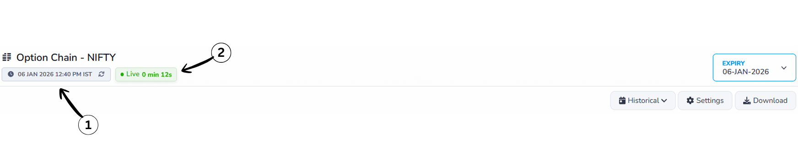
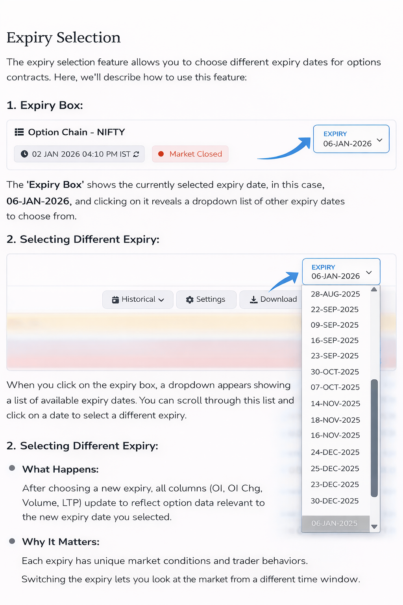
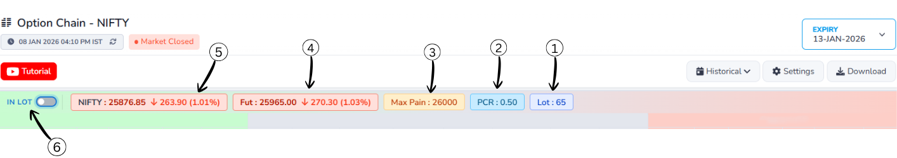
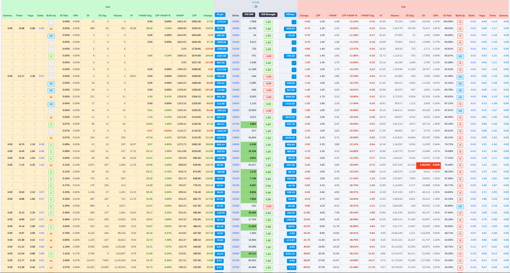
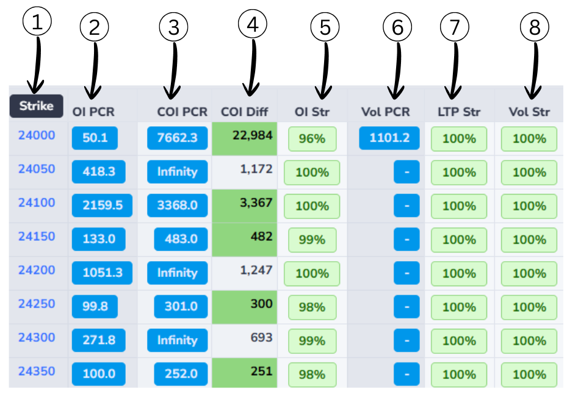
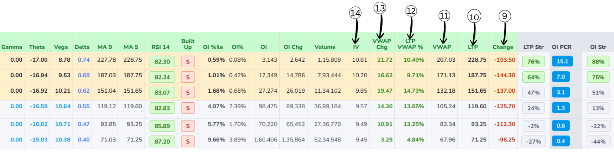
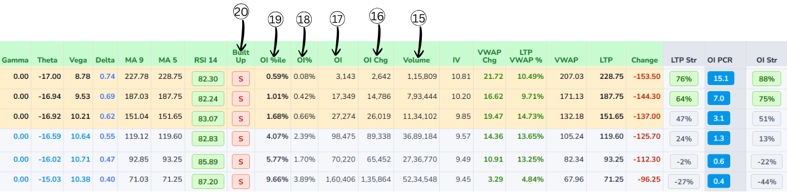
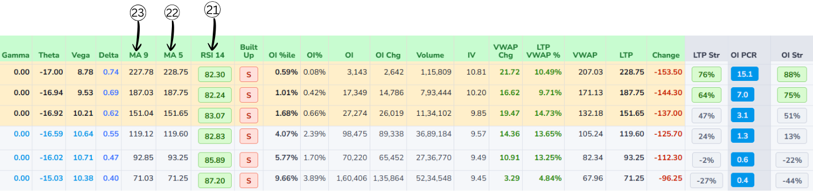
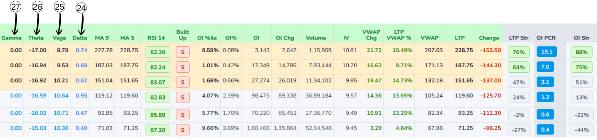

Headers

1. Last Updated Time
This indicates the most recent time when the option chain data was refreshed. It helps users know how
current the information is.
2.Live Status
The Live Status indicator confirms that the option chain data is updating in real time.
The timer shown next to it (for example, 0 min 12s) indicates how many seconds ago the data was last refreshed.

3.Expiry Selection
This section allows users to select the expiry date for which they want to view the option chain data.
Options typically have multiple expiry dates, and selecting one updates the displayed data accordingly.
4.Explanation of Historical data
The Historical option allows you to view option chain data from a past time instead of live market data.
When enabled, the table stops updating in real time and displays a previously recorded snapshot of prices, Open Interest, and volume.This helps users review earlier market conditions and analyze how the option chain behaved at a specific moment.
5.Adjusting time in Historical data
This feature allows you to navigate backward or forward in time to view option chain data at different moments of the selected date.
Navigation buttons:
- Use –5m, –15m, –30m, –1h buttons to go back and review earlier snapshots of the market.
- Use +5m, +15m, +30m, +1h buttons to move forward toward more recent data, where available.
- The selected time is highlighted in the center, showing the exact moment for which the option chain data is displayed. This makes it easy to analyze how prices, Open Interest, and volume changed over time.
Settings
- Column Selection: Choose which data columns to display in the option chain table, such as Open Interest, Volume, Greeks, etc.
- Display Preferences: Adjust how data is presented, including sorting options and visual styles.
- Save Settings: Save your customized settings for future sessions to maintain a consistent view.
Market Snapshot

1. What is LOT
In the options market, you cannot buy or sell NIFTY one-by-one. The exchange allows trading only in fixed bundles. That fixed bundle is called a LOT.
For NIFTY: 1 LOT = 65 NIFTY units means:
This lot size (65) is fixed by the exchange,
not by traders.
2. Put Call Ratio
Put–Call Ratio (PCR) is a market‑sentiment indicator that compares how many put options are being traded (or
are open) to how many call options are being traded (or are open) for the same index or stock. It tells you
whether traders, as a group, are more focused on protection/downside (puts) or on upside (calls).
Formula of Put–Call Ratio (PCR)
Formula:
Put–Call Ratio (PCR) = Total Put Open Interest ÷ Total Call Open Interest
Example:
- Total Put Open Interest = 24,00,000
- Total Call Open Interest = 20,00,000
Calculation:
PCR = 24,00,000 ÷ 20,00,000 = 1.20
What PCR Values Mean?
| PCR Range |
Market View |
| > 1.2 |
Bullish |
| 0.8 – 1.2 |
Neutral |
| < 0.8 |
Bearish |
3. Max Pain
Max Pain is the price level at which the maximum number of option buyers (both CALL and PUT) lose money at expiry,
because most options expire worthless, allowing option sellers to earn the highest profit.
Price breakdown:
Above this price – most CALL buyers lose
Below this price – most PUT buyers lose
Near this price – both CALL and PUT buyers lose
This is why prices often move or settle near the Max Pain level close to expiry,
especially in non-trending markets.
4. Futures Price(FUT)
Futures Price is the price at which traders are currently willing to buy or sell NIFTY for a future date,
and it reflects the expectation and direction of big traders in the market.
Price breakdown:
Falling futures price – selling pressure and bearish expectation
Rising futures price – buying pressure and bullish expectation
Large price movement – strong conviction by big players
Since futures are mainly traded by institutions,
the futures price often leads the spot market and signals direction early.
5. NIFTY (Spot Price)
NIFTY Spot Price is the current real market value of the NIFTY index,
calculated from the prices of its underlying stocks,
and it represents the actual position of the market at that moment.
6. IN LOT
IN LOT is a display setting that converts option data from raw numbers into lot-based values,
making it easier to read, compare, and understand the actual trading size.
Data breakdown:
OFF – values are shown as total quantity
ON – values are shown as number of lots
Same data, different display format
This setting helps traders quickly understand position size
without dealing with large and confusing numbers.
What is an Option?
An option is a special contract that connects two people: a buyer and a seller. It gives the buyer a choice
(a right), not a compulsion, to buy or to sell something (like Nifty or a stock) at a fixed price within a
limited time. The fixed price is the strike price, and the last date to use this choice is the expiry date.
What is Option Chain?
An option chain is simply a big list of all the options available for one stock or index, shown together in a
table.
For one particular expiry date, it shows every strike price and, for each strike, the call options on one
side and the put options on the other side. Next to each strike, the table shows useful numbers like the
last traded price, how many contracts traded today, and how many contracts are still open. By looking at
this one screen, a trader can quickly compare different strikes and see where most buying and selling
interest is, instead of checking each option one by one.

Types of Options
Call Options and Put Options.
- Call Option: A call option gives the buyer the right to buy an asset at a specified price within
a specific time period. Buyers of call options expect the price of the underlying asset to rise.
- Put Option: A put option gives the buyer the right to sell an asset at a specified price within a
specific time period. Buyers of put options expect the price of the underlying asset to fall.
What Happens at Expiry
- On the expiry day, you check: "Is it useful to use my right or not?"
- If the market price makes your right beneficial, you use it.
- If the market price makes your right useless, you do nothing and let the option expire.
- In the worst case, your loss is only the premium you paid at the start.
Example: Call option
- Nifty is at 22,000
- You buy a call option with strike 22,000 and pay a premium of 100 points.
Case 1: Market goes up
- At expiry, Nifty becomes 22,300.
- Your contract allows you to "buy at 22,000" while the market is 22,300.
- The option is worth about 300 points (22,300 - 22,000).
- Your profit is roughly 300 - 100 = 200 points.
Case 2: Market goes down
- At expiry, Nifty becomes 21,700.
- Your right to buy at 22,000 is now useless.
- You simply don't use the option.
- Your loss is only the 100-point premium you paid.
Example: Put option
- Nifty is at 22,000.
- You buy a put option with strike 22,000 and pay a premium of 100 points.
Case 1: Market falls
- At expiry, Nifty falls to 21,500.
- Your contract allows you to "sell at 22,000".
- The option is worth about 500 points.
- After subtracting the premium, your profit is 500 - 100 = 400 points.
Case 2: Market rises
- At expiry, Nifty goes up to 22,500.
- Your right to sell at 22,000 is useless.
- You let the option expire.
- Your loss is only the 100-point premium.
Explanation-Middle column

1.Strike Price
Strike price is the fixed price written in the option contract at which you can buy or sell the underlying
asset, depending on whether it is a call or a put option.
In an option chain, each row has one strike price like 21,800 or 22,000. This number is the agreed price for
the deal: for a call option it is the price at which you have the right to buy, and for a put option it is
the price at which you have the right to sell. The strike stays constant from the day the option is created
until expiry, even though the market price keeps moving up and down. How far the market is from the strike
helps decide whether the option is cheap or costly and whether it is in-the-money, at-the-money, or
out-of-the-money.
2. OI PCR (Open Interest Put–Call Ratio)
- OI PCR compares total put open interest to total call open interest for an index or stock.
- Formula:
- OI PCR = (Total Put OI) ÷ (Total Call OI).
Example:
- Total Put OI = 150,000 contracts
- Total Call OI = 100,000 contracts
-
Apply formula:
OI PCR = Total Put OI ÷ Total Call OI
-
OI PCR = 150,000 ÷ 100,000 = 1.5
-
Interpretation: OI PCR is above 1 → more put OI than call OI → traders are expecting a downside.
3. COI PCR(Change in Open Interest Put–Call Ratio)
It shows which side added more fresh positions today —the put seller or the call
seller.
COI PCR = Change in Put OI ÷ Change in Call OI
-
If COI PCR is above 1:
• More put OI was added than call OI.
• Put seller are stronger → the market has a bullish bias.
-
If COI PCR is below 1:
• More call OI was added than put OI.
• Call seller are stronger → the market has a bearish bias.
Example 1
- Put OI added today: 30,000
- Call OI added today: 10,000
- COI PCR =30,000 ÷ 10,000 = 3
- This means put sellers are much more active, so the market has a bullish
Example 2
- Put OI added today: 15,000
- Call OI added today: 30,000
- COI PCR = 15,000 ÷ 30,000 = 0.5
- This means call sellers are more active, so the market has a bearish
Difference Between COI PCR v/s OI PCR
- OI PCR uses total Open Interest.
- OI PCR shows overall market sentiment.
- OI PCR changes slowly.
- OI PCR is better for broader trend bias.
- COI PCR uses change in Open Interest.
- COI PCR shows today's fresh sentiment.
- COI PCR changes quickly.
- COI PCR is better for intraday strength/pressure.
4. COI Diff (Change in Open Interest Difference)
It shows who is stronger right now at that strike put side or call side.
- Positive number → Put sellers are stronger (Bullish)
- Negative number → Call sellers are stronger (Bearish)
Formula.
COI Diff = Put OI − Call OI
Easy Example
Call OI = 10,000
Put OI = 13,000
COI Diff = 13,000 − 10,000 = +3,000
Positive value → Buyers / support side is strong (Bullish signal)
5. OI Str (Open Interest Strength %)
OI Str shows which side is stronger at a strike price and how strong it is in percentage.
How to read:
100% → Only one side is present
80–99% → One side is dominating
Around 50% → Both sides are equal
Simple idea:
The side with higher Open Interest is the stronger side.
Formula:
OI Str = (Higher OI ÷ Total OI) × 100
Example:
Call OI = 2,000
Put OI = 8,000
Total OI = 10,000
OI Str = (8,000 ÷ 10,000) × 100 = 80%
80% means the Put side is much stronger and acting as support.
6. Vol PCR (Volume Put-Call Ratio)
Vol PCR shows where today's trading activity is happening more.
It compares Put option trading with Call option trading.
In simple words, it tells us whether traders are trading
more Puts or more Calls today.
Formula:
Vol PCR = Put Volume ÷ Call Volume
Example:
Call Volume = 165
Put Volume = 238,571
Vol PCR = 238,571 ÷ 165 = 1445
How to read the value:
Vol PCR < 1 → More Call trading
Vol PCR ≈ 1 → Equal Call & Put trading
Vol PCR > 1 → More Put trading
Very high Vol PCR → Extreme Put activity
In this example, Vol PCR is extremely high, meaning almost all trading
activity is happening on the Put side.
7. LTP Str (Last Traded Price Strength)
LTP Str shows which option side is stronger at a strike price
based on price movement.
It focuses only on how the Call and Put prices are moving,
not on volume or open interest.
- Based on Last Traded Price (LTP)
- Shows price strength, not quantity
- No fixed formula is used
- Behavior-based indicator
- Rising price means increasing strength
- Falling price means decreasing strength
Simple understanding:
Call price up & Put price down → Call side strong
Put price up & Call price down → Put side strong
Both moving same direction → No clear strength
LTP Str helps identify real-time price pressure in the market.
8. Vol Str (Volume Strength)
Vol Str shows which option side has stronger trading participation
at a strike price.
It is based on trading volume, which means the number of trades
happening right now.
- Based on option trading volume
- Shows trader participation
- Higher volume means stronger interest
- Helps confirm real market activity
- Useful for identifying strong strikes
Simple understanding:
Higher Call volume → Call side strong
Higher Put volume → Put side strong
Very high volume → Strong conviction
Vol Str confirms whether the move is supported by real trading activity.
Option chain Column Explanation

Change
LTP Change shows how much the latest price has moved compared to an earlier reference price.
-
Formula:
LTP Change = Today's Current LTP - Yesterday's Closing Price
-
If LTP Change is positive, the option is trading higher than before (price has gone
up).
-
If LTP Change is negative, the option is trading lower than before (price has gone down).
Last Traded Price(LTP)
It is the price of the most recent trade that happened in that option or stock on the exchange. Whenever a
new trade is executed, that deal's price becomes the new LTP, so it always shows the latest price at which
buyers and sellers actually agreed.
VWAP (Volume Weighted Average Price)
VWAP tells you the average price at which most of the trading happened during the whole day.
- Price above VWAP → buyers strong → indicates bullishness.
- Price below VWAP → sellers strong → indicates bearishness.
LTP VWAP %
LTP VWAP % shows how far the current Last Traded Price is from today’s VWAP in percentage terms.
-
Common formula
LTP VWAP % = (LTP − VWAP) / VWAP × 100
-
If LTP is above VWAP, this percentage will be positive; it tells you how many percent the latest price
is above the average traded price.
-
If LTP is below VWAP, the percentage will be negative; it shows how much cheaper the latest trade is
compared to the day’s average.
-
A small number (like +0.5%) means LTP is close to VWAP; a big number (like +5% or −5%) means price has
moved far away from the average, which some traders see as overbought / oversold intraday.
Example:
- LTP (Last Traded Price) = 105
- VWAP = 100
-
Apply formula:
LTP VWAP % = (LTP − VWAP) / VWAP × 100
-
LTP VWAP % = (105 − 100) / 100 × 100 = 5%
-
This means: LTP is 5% above the VWAP (buyers stronger).
VWAP Change
VWAP Change tells you how much today’s VWAP has moved compared to a previous reference VWAP, usually
yesterday’s VWAP for the same option.
-
Formula:
VWAP Change = Today’s VWAP − Yesterday’s VWAP
-
If VWAP Change is positive → today’s average traded price is higher than yesterday’s average (buyers
were willing to pay more).
-
If VWAP Change is negative → today’s average traded price is lower than yesterday’s average (sellers
accepted lower prices).
-
VWAP Change with volume helps show whether the market’s “fair” traded level is shifting up or down with
strength.
Implied Volatility(IV)
Implied Volatility (IV) tells you how much the market expects the price of the stock or index to move in the
future.
-
IV does not tell you whether the price will go up or down, only how big the move might be.
-
IV is shown as a percentage per year (for example, 15%, 20%, 30%).
-
A higher IV means the market expects bigger swings and more uncertainty.
-
A lower IV means the market expects smaller moves and more stable prices.
-
When IV is high, options usually become more expensive because the chance of a big move is higher.
-
When IV is low, options become cheaper because big moves are less expected.
Option chain Column Explanation-2

Volume
Volume is the total number of contracts traded today for that specific option (that strike and expiry).
- Every time one buyer and one seller complete a trade, volume increases by 1 contract.
- Volume counts all trades, whether they are opening new positions or closing old ones.
- High volume means that option is actively traded and it is easier to enter and exit.
- Very low volume means fewer traders are interested there, so the bid-ask spread can be wide.
- Volume resets to zero every new trading day and builds up through the day.
Change in OI(Open interest)
Change in OI (Change in Open Interest) shows how much the number of open contracts has gone up or down
compared to the previous day.
-
Open Interest is the total number of contracts that are still open and not closed.
-
Change in OI formula:
Change in OI = Today's OI - Yesterday's OI
-
If Change in OI is positive → new positions were added (more contracts are now open).
-
If Change in OI is negative → traders closed positions (fewer contracts left open).
-
A big positive Change in OI with good volume means fresh money is entering that strike.
-
A big negative Change in OI means traders are exiting that strike and interest is decreasing.
OI(Open interest)
Open interest (OI) tells you how many option contracts are currently "alive" for a particular strike and
expiry.
In simple words, it is the count of all contracts that have been created but not yet closed, squared off, or
expired. If new traders open fresh positions, open interest goes up; when traders close their existing
positions, open interest goes down.
A high OI at a strike usually means many traders are interested and the option is more liquid, so it is
easier to buy and sell there.
OI Percent
OI Percent shows how much OI increased or decreased today in percentage.
- If OI increased from 1,00,000 to 1,10,000 → OI Percent = +10%
- If OI fell from 1,00,000 to 90,000 → OI Percent = –10%
OI Percentile
OI Percentile tells you how high or low today’s OI is compared to its past levels.
- If OI Percentile is 90% → Today’s OI is higher than 90% of previous days → very high →
strong interest.
- If OI Percentile is 10% → Today’s OI is higher than only 10% of previous days → very
low → weak interest.
Built-up
Built-up in an option chain tells you what kind of positions are getting created or closed at a strike
by looking at price + OI together. It is usually shown as four types:
-
Long Buildup
- Price goes up and Open Interest goes up.
- New buyers are entering and holding positions.
- Generally indicates bullish interest at that strike.
-
Short Buildup
- Price goes down and Open Interest goes up.
- New sellers (shorts) are entering and holding positions.
- Usually indicates bearish sentiment.
-
Short Covering
- Price goes up and Open Interest goes down.
- Traders who were short are closing their positions.
- Often seen when a down-move is ending or reversing.
-
Long Unwinding
- Price goes down and Open Interest goes down.
- Traders who were long are exiting or booking profits.
- Shows bullish positions reducing, not fresh shorts being added.
Technical Indicators Explanation

Greeks-Explanation

24.Vega – effect of volatility
- Vega shows how much the option price will change if implied volatility changes by 1 percentage point.
- Higher volatility makes options more expensive; lower volatility makes them cheaper.
- Example: Vega = 2.5 means if IV goes from 20% to 21%, the option price is expected to increase by about
2.5 points.
- Options with more time to expiry and near-the-money strikes usually have higher vega.
25. Gamma
- Gamma tells how much delta itself will change when the underlying moves by 1 point.
- If delta is “speed” of the option, gamma is the “acceleration” – how quickly that speed changes.
- Example: A call has delta 0.40 and gamma 0.05. If Nifty goes up 1 point, new delta ≈ 0.45 (0.40 + 0.05).
If it goes up another 1 point, delta may rise again to about 0.50.
- Gamma is usually highest for options near the current market price and close to expiry, because there
the option’s behaviour can flip quickly between acting like “almost worthless” and “very valuable”.
26. Theta – effect of time (time decay)
- Theta shows how much an option's value is expected to decrease each day just because time is passing.
- For option buyers, theta is usually negative → the option loses value daily.
- Example: Theta = −3 → if all else stays the same, the option loses about 3
points in value per day.
- Time decay accelerates as the expiry date approaches, especially for
options near the money.
27. Delta – effect of price change
- Delta tells how much the option price is expected to move if the underlying moves by 1 point.
- Call options have positive delta (they gain when price goes up); put options have negative delta (they
gain when price goes down).
- Example: If a call has delta 0.40 and Nifty moves up 1 point, the option price is expected to go up
about 0.40 points.
- A delta close to 0 means the option hardly reacts to small price moves; a delta close to 1 (or −1 for
puts) means it moves almost point‑for‑point with the underlying.
Relationships Between all Greeks?
Delta and Gamma
- Delta is “first reaction” of the option price when the underlying moves; Gamma is how fast that reaction
itself changes.
- When Gamma is high, Delta can jump quickly with even a small move in the underlying, so the option
becomes very sensitive.
- When Gamma is low, Delta changes slowly and the option behaves more steadily.
Gamma and Theta
- Options with high Gamma (very responsive to price moves) usually have high Theta (they lose value faster
with time).
- This is the trade‑off: if you want strong benefit from small price moves (high Gamma), you must accept
faster time decay (more negative Theta).
- Deep in‑the‑money or far out‑of‑the‑money options normally have lower Gamma and also lower Theta
compared to at‑the‑money options.
Vega with Delta and Gamma
- Vega measures sensitivity to implied volatility; when implied volatility changes, it also affects Delta
and Gamma.
- If volatility increases, option prices rise and both calls and puts tend to have Deltas move closer to
0.5 (more uncertainty), and Gamma around the money often increases.
- If volatility falls, Deltas of in‑the‑money options move closer to 1 (or −1 for puts) and Deltas of
out‑of‑the‑money options move closer to 0, while Gamma around the money tends to drop.
Time to expiry and all Greeks
- With more time left to expiry, Deltas are softer (closer to 0.5), Gamma is smaller, Theta is slower, and
Vega is larger.
- As expiry gets closer, Deltas move quickly toward 1 or 0, Gamma spikes near the money, Theta decay
speeds up there, and Vega shrinks.
- So time passing doesn’t only increase Theta decay; it also reshapes Delta, Gamma, and Vega together.